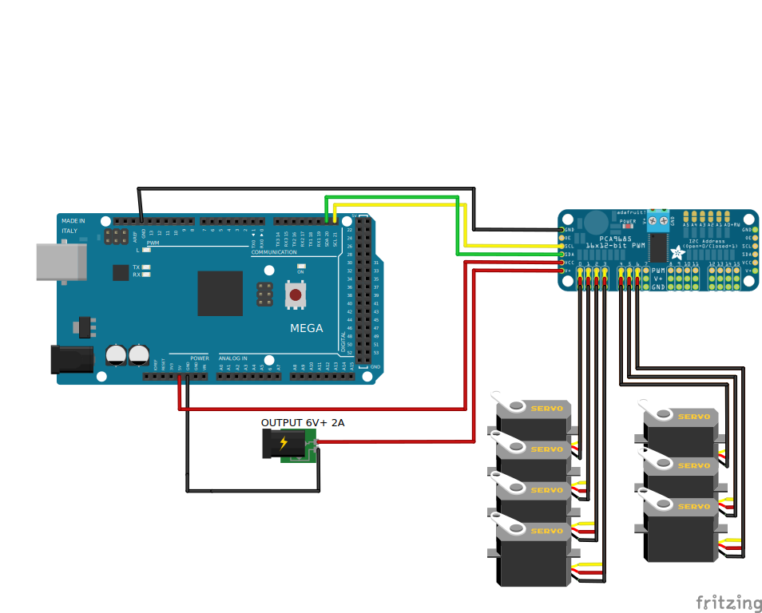

The purpose of this project was to create a fully functional 6 Degree of Freedom robot arm
like the common universal robots and others used in industry
on automated lines etc.
Traditionally, these robots perfrom fast paced, repeatable, and extremeley accurate tasks to fulfill their purposes.
The robots must be precise, robust, and reliable enough to get the job done. With such a daunting set of requirements
it's no surprise that a high quality robot arm can cost more than $5,000 with many popularly used in industry being much more expensive than that.
I don't have that kind of pocket change for all the things I'd like to do with a robot arm, but I really
want to have an arm of my own to use around the house.
Therefore my project goal was to see how good of a robot arm I could make with limited funds, time, and resources that mimics the function of an industrial robot as much as I can.
The first steps were to set a budget, time-frame, and outline some clear requirements for my project.
I decided I could allot about $300 for the hardware and give myself 1 month with the first portion of the
month dedicated to the CAD design and schematics and the later half to control.
A more detailed compilation of the purpose, deliverables, and project schedule can be found here in my Project Organization documentation.
A few decisions were made to simplify the process and keep things cheaper. With my background in mechancial engineering, I am comfortable 3D modeling all
the custom parts I might need. I have an Ender 3 3D printer and will make the parts using that. I can also control the robot using an
Arduino Mega 2560 and PCA9685 that I have laying around (I will factor these parts and materials into the cost).
I will program the Arduino in C code, and then use MATLAB to send serial commands with joint variables to move the robot.
In the future I may create python scripts that mimic the MATLAB ones.
To summarize my approach, I have created a small functional requirements table below.
| NUM. | REQUIREMENTS | SPECIFICATION | VERIFICATION |
| 1 | 6 DOF in Hardware | 6 servos that can articulate simulataneously | Arduino articulates each joint by a defined angle |
| 2 | Robot moves accurately | Within +/- 2cm | Measure error after calling same joint command several times |
| 3 | Robot is within budget | <$300 | Budget is not exceeded |
| 4 | Robot controller controls robot at sufficient rate | Max Servo rate is ~60Hz | Send commands while increase rate to see when commands faulter |
| 5 | Compatible with serial commands | Written in Python or MATLAB and Arduino C code | Serial Commands can automatically be sent from external source |
| 5 | Custom hardware is 3D printed | Ender 3 with PLA | Parts designed in Fusion 360. Printed and constructed to match virtual model |
I dove right into the CAD design for the robot. I wanted to make every joint modular. I say modular to mean that the separate joints could be arranged interchangably. Like legos the different pieces of the robot could potentially be connected in diffrent order. Therefore all of the joints (exculding the final joint at the end effector) contain holes that could be used to attach to different joints. A rendering of the completed design can be seen in figure 1, and the Fusion 360 design interface for the robot can be seen in figure 2.
The base design of the robot features a shoulder cup that rotates about the z axis (see figure 3). There is a servo inside the cup that the robot rests on. The next joint is another shoulder joint that acts like an elbow. Joint 3 also works like an elbow. The 4th joint rotates like a forearm. The 5th joint is like another elbow joint, called the wrist joint. The final joint is another forearm style rotating wrist joint. At the top is a quick n' cheap modeled end effector as I choose to use an off the shelf part since I was low on time.
There ended up being 6 custom parts modeled and printed for the robot. There is the base, the base cup, joint 2, joint 3, joint 4, and joint 5. The base cup could be interpreted as joint 1 as it is directly attached to the first servo. The second and third joints in the model are refered to as short joints because the first design featured both of these joints being an inch longer than in the final product. The MG996R servos used to build this robot were a little on the cheaper side, and could not supply enough torque to lift the robot without some help when the arm was too long. I shortened the lengths of joints 2 and 3 to get the robot to perform a little bit better. We'll address how this issue comes into play again later. The following video shows the completed Revyn Arm model with an exploded view and the 180° functionality of each joint.
With the hardware designed, it was time for the electronics. As mentioned previously I used an Arduino Mega 2560 and PCA9685 to control the robot. The Arduino was used to recieve serial commands and interpret them as signals to send to the PCA9685. The PCA9685 is a servo motor driver that can control many servos at once. For this project I was controlling 7 low power servos so it seemed like a good fit. I was running the control loop for these serial commands at 9600 Baud and a control loop rate of 60Hz for the servos. I used an external bench top power supply (not factored into the cost of the project) to supply 6 Volts to the PCA9685 V+ pin to power the servos. I did not use the given PCA9685 power terminal block to power the servos. For whatever reason the PCA9685 chips I purchased did not have the terminal pins wired correctly and was not supplying power. The work around was just to use the V+ pin, typically used for powering other PCA9685 boards when chained together. The arduino was powered by the computer sending serial commands. See the following schematic for wiring details.
The CAD model and electronic schematics were completed and the physical hardware was printed and assembled. The total cost of materials came down to around only $140. This included a $20 roll of PLA, the Arduino, PCA9685, the wires , some hardware to hold the parts together, the servos, and the end effector claw. I was surprised at how much cheaper I was able to assemble the arm for, but I have observed that these inexpensive parts have their draw backs. The servos are not as strong as I'd like and they have a smaller holding torque than expected. The arm struggles to reach some of the areas within the arm's joint space.
In order to determine what the servos could feasibly do, I had to calibrate them. I wanted to be able to send an angle command to the arduino and have the servos move accodingly, but in order to use the PCA9685 with the necessary Adafruit library the servos require PWM values. For each servo I assigned a PWM value and measured how the angle changed with an offhand protractor I had. Possibly not the best solution, but after I got 20 or so points for each joint I figured it would be within a few centimeters of accuracy as I was hoping. I ran a linear regression for each servo's Angle to PWM datasets and found a good fitting calibration. With the calibration complete I was able to make my control script, RevynMat2ArdController.ino. With this script I tried to drive the servos within different ranges to see where they would fail or where they could supply the necessary torque. You will see in the future forward kinmetics and inverse kinematics project how this plays out.
For now we can appreciate how the finished hardware product came together!
All source code for this project can be found on my github page. The step CAD files for the parts can be found here. A completed assembly file is also here. A drawing packet with a bill of materials, should someone else want to build the robot, is listed below.

Linear Trajectory generator that uses inverse kinematics and forward kinematics to maintain orientation as the robot moves.
Check it Out
Hardware design, CAD design, 3D printing, and Arduino Schematics for a 6 DOF small desk robot. Useful for small repeatable tasks.
Check it Out
Stay Tuned. Project is currently in a planning phase/development phase. More details will be posted when the information is available.
Check it Out